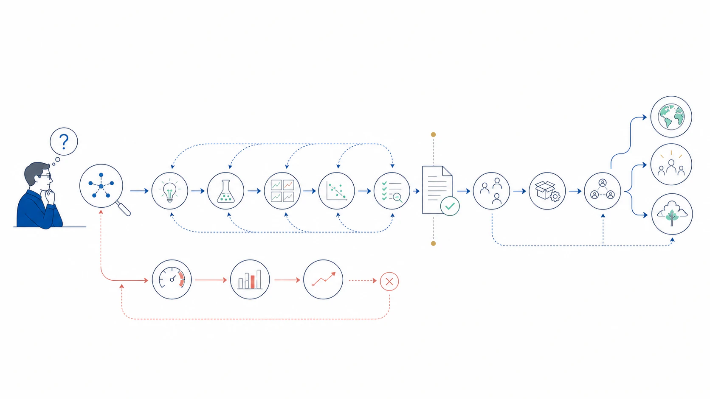

Research Notes
All views expressed here are my own.
Research Practice / Scientific Integrity
Beyond Acceptance: A Discipline for Durable AI Research
Top-conference acceptance is worth pursuing, but it is still a noisy, gameable proxy. These notes propose a richer reward architecture and a set of self-binding practices for producing work that survives the deadline, the review cycle, and the benchmark.

The goal is not to stop seeking reward. It is to refuse a reward function simple enough to game.
When a Useful Ambition Becomes the Objective Function
Before every deadline, two questions quietly compete: what is true, and what can be made legible enough to score? They often align. A clear contribution, fair evaluation, strong writing, and thoughtful venue fit can improve both the paper and its chance of acceptance. Wanting a top-conference paper is therefore not a failure of scientific values. Conferences concentrate feedback, attention, collaborators, career opportunities, and a deadline that can turn unfinished thinking into a public contribution.
The danger begins when anticipated review scores stop being feedback about the research and become the objective function of the research. The question shifts from “What uncertainty is worth reducing?” to “What contribution will look new?” The benchmark stops representing the construct and becomes the target. Evidence is selected for narrative neatness. Boundary conditions become inconvenient. The project may become increasingly optimized for acceptance while becoming less capable of surviving contact with reality.
This is a form of proxy capture. Work on Goodhart effects distinguishes several ways in which a measure can lose its relationship to the goal under optimization pressure. In research, the pressure need not produce one dramatic act of misconduct. It can instead operate through a sequence of locally defensible choices that all lean in the same direction.
- Seeking
- Pursuing acceptance, visibility, and recognition. This is normal ambition and can create useful discipline.
- Proxy optimization
- Improving a proxy—reviewer familiarity, a leaderboard score, or novelty language—until it starts displacing the underlying scientific objective.
- Hacking
- Exploiting blind spots in evaluation to obtain the signal without earning the substance the signal is supposed to represent.
- Self-hacking
- Training my own taste to recognize only what looks publishable, until I stop seeing questions whose value is difficult to compress into one review cycle.
I am borrowing the language of reward hacking from AI systems, but the distinctions matter. Most everyday drift is unintentional proxy optimization, not misconduct. Reward hacking is the stronger case in which an evaluation blind spot is used to obtain the signal without the corresponding substance. “Self-hacking” is my informal name for the quieter process by which the incentive changes what I learn to notice and value.
How Good Researchers Accidentally Game Themselves
This is not only a problem of individual character. Smaldino and McElreath's model of the natural selection of bad science shows how incentives for publication output can favor weaker methods even without deliberate cheating. That is why good intentions are not a sufficient control. The research process needs structures that make distortion harder and honest correction easier.
Proxy optimization can happen without fraud or conscious shortcutting. An experiment is rerun on several seeds, but only the stable-looking setting enters the main table. A weak baseline is tuned less carefully than the proposed method. A small benchmark gain becomes a broad claim about capability. The story is decided first and the ablations are chosen to support it. A deadline forces the experiment to shrink, but the claim expands to preserve excitement. Complexity is interpreted as depth because it is easier to display than understanding.
Machine learning makes this especially easy because benchmarks give precise feedback while many true goals—robustness, explanatory depth, usefulness, and downstream consequence—remain partially observed. The benchmark lottery shows how choices of tasks and evaluation setup can change apparent algorithmic superiority. Leaderboards can clarify progress, but their precision should not be confused with completeness.
AI research agents increase both sides of this problem. They can search, code, experiment, and write faster, but they can also industrialize plausible shallow work. More runs can hide weaker experimental taste; smoother prose can hide a gap between claim and evidence; a large generated pipeline can exceed the understanding of every author. Automation should increase the amount of verification we can afford, not reduce the amount of understanding we require.
Acceptance Is Not a Scalar Reward
A binary accept–reject result compresses a high-dimensional research process into one consequential bit. That bit matters, but it cannot tell me whether the question was important, the central claim is true, the evidence will replicate, the artifact will be reused, or the project made me a better researcher. I want to read the decision alongside several independent scoreboards rather than let it overwrite them.
My current principle: acceptance is an external signal inside the reward architecture, not the reward architecture itself.
Venue & communication
- Is the problem legible and relevant to the community?
- Can reviewers identify the contribution and test its claims?
- Did the work enter the right scientific conversation?
Science & evidence
- Is the central claim falsifiable and proportional to the evidence?
- Does it survive strong baselines, reruns, and adversarial checks?
- Are mechanisms, uncertainty, and boundary conditions understood?
Endurance & community value
- Can others reuse the artifact, measurement, or abstraction?
- Does the insight survive a benchmark or trend changing?
- Does it generate better questions rather than only variants?
Researcher growth
- What technical capability and judgment became genuinely mine?
- Can I reproduce and explain the core result independently?
- Did the project improve how I ask, test, debug, and reason?
These scoreboards should not be combined into one larger weighted sum. That would merely create a more elaborate proxy. Some conditions are non-compensable: ten attractive experiments cannot rescue leakage in the evaluation; elegant writing cannot compensate for a claim that the evidence does not support; acceptance cannot retroactively make a fragile result robust. My preferred order is closer to a constraint system:
Integrity constraints → Scientific value → Communication & venue fit
A More Granular Meaning of Success
“Did it get in?” is too coarse for understanding what a project achieved. I find it more useful to separate venue milestones from scientific and endurance milestones. These are not one prestige ladder. A project can advance along one dimension without advancing along the other, which is precisely why a venue decision should not monopolize the evaluation.
Venue milestones
- Review-ready
- The question, claim, evidence, limitations, and artifact form a complete contribution that another researcher can evaluate seriously.
- Engaged
- The work reached a submission, workshop, presentation, or serious exchange and began receiving external scrutiny.
- Accepted
- The paper passed a venue's threshold under a particular scope, reviewer pool, and moment in the field.
- Recognized
- The community gave an additional signal—discussion, spotlight, oral, award, or sustained attention—that the contribution was especially useful or timely.
Scientific & endurance milestones
- Validated
- The central result survives reruns, stronger alternatives, stress tests, and ideally independent reproduction.
- Reused
- Other people build on the code, data, method, measurement, or conceptual framing rather than only cite the paper.
- Enduring
- The work remains useful after the benchmark, model generation, or trend changes, and improves how the field thinks or builds.
A Research Constitution for Each Project
Self-constraint is not a moral pose. It is research governance designed before the result, the deadline, and the temptation to rationalize.
The moment of maximum temptation is a poor time to invent standards. At the beginning of a substantial project, I want a one-page research constitution: a small set of commitments that remains visible while methods, results, and the paper evolve. It should be lightweight enough to use and concrete enough to make deviations obvious.
- What important uncertainty are we trying to reduce?
- What is the smallest falsifiable version of the central claim?
- What evidence would make us abandon, narrow, or revise it?
- Which primary metrics, baselines, and evaluation choices should be fixed before final results?
- What are we unwilling to do even if it improves acceptance probability?
- What would remain valuable if the expected positive result disappears?
- If the current benchmark vanished next year, what insight would survive?
- Which claims and limits must every author understand, and who owns each critical evidence path well enough to rebuild it?
Minimum viable protocol before submission: lock the primary claim, metric, and strongest baseline; preserve an experiment ledger; run one explicit falsification pass; and reproduce the central evidence from a clean environment. Stronger claims and higher-risk settings should trigger stronger controls, including independent reproduction and broader boundary mapping.
This is related to the logic of preregistration: decisions and predictions stated before outcomes are known make later deviations and selective analyses easier to detect. Not every AI project supports formal preregistration, especially exploratory work, but the deeper discipline still applies. We should distinguish exploration from confirmation, record when hypotheses change, and disclose which analyses were selected after seeing the evidence.
Evidence audit
- Every core claim maps to specific supporting and disconfirming tests
- The strongest baseline receives comparable care and resources
- Failed runs, changed metrics, and killed hypotheses remain traceable
- A clean final setting is preserved from repeated optimization
Understanding audit
- Explain the mechanism without the abstract, slides, or agent
- Predict the direction of decisive ablations before running them
- Name realistic failure conditions and simpler explanations
- Rebuild the central evidence path from a clean environment
A useful paper should leave two artifacts: public knowledge outside the researcher and durable capability inside the researcher. If the PDF improves while the authors lose ownership of the mechanism, implementation, or evidence chain, the project has externalized output while failing to internalize expertise.
A Discipline for Durable Work
Long-term influence cannot be promised in advance. It is partly contingent on timing, community attention, and future developments. What a researcher can control is whether the work creates the conditions for endurance: an important question, trustworthy evidence, explicit limits, reusable artifacts, and an insight that compresses rather than decorates complexity.
Anchor the Question
Optimize for Reduced Uncertainty
A research contribution should make an important part of the world less confusing, not merely make a table look better.
I want to state the uncertainty before naming the method. This makes it easier to see whether the method answers the question or merely supplies a publishable object. The project should retain value under a negative result: a clarified boundary, a failed assumption, a better measurement, or a reusable experimental system can all reduce uncertainty honestly.
Apply the Durability Test Early
If the benchmark, model family, and trend disappeared next year, what part of the contribution would still matter?
This question does not disqualify timely work. It asks whether the paper contains a mechanism, measurement, abstraction, dataset, or engineering insight that travels beyond one leaderboard moment. The earlier this is asked, the more it can shape the contribution rather than decorate the conclusion.
Make Evidence Costly to Fool
Schedule a Falsification Pass
The strongest version of a claim is the one that survives a serious, honest attempt by its authors to kill it.
Before polishing the story, I want a review devoted to alternative explanations, leakage, unfair baselines, seed sensitivity, hidden data choices, and the simplest mechanism that could reproduce the result. An independent collaborator or reviewer—possibly supported by a separately specified agent—should be rewarded for finding disconfirming evidence rather than helping the narrative converge.
Maintain a Claim–Evidence Map
Every major claim should have a visible evidence path and a visible condition under which it would weaken.
A claim–evidence map prevents one attractive result from silently supporting several stronger conclusions. It also makes rebuttal and revision more honest: a failed experiment can narrow the relevant claim without forcing the entire paper into defensive storytelling. The reproducibility practices reported by the NeurIPS reproducibility program—including its checklist, code policy, and reproducibility challenge—strengthen the case for treating transparency, code, and verifiable procedures as part of the contribution rather than administrative material added after it.
Preserve Epistemic Ownership
Let AI Increase Leverage, Not Distance
Agents may accelerate execution, but they cannot inherit scientific responsibility or make understanding optional.
Core citations should be checked independently. Central experiments should be reproducible without hidden conversational state. At least one author should own each critical abstraction, implementation path, and inference from evidence to claim well enough to rebuild it independently. Tool separation alone is not epistemic independence when the tools inherit the same specification, data, and assumptions. Agent-generated complexity should pass a necessity review: if a simpler mechanism explains the result, the paper should prefer understanding over ornamental sophistication.
Perform a Story-Removal Review
Temporarily remove the abstract, novelty framing, and intended conclusion; then ask what the evidence alone permits us to say.
Good writing helps a real contribution travel. It becomes dangerous when narrative coherence is treated as evidence. A story-removal review exposes whether experiments support the central claim, only a narrower claim, or a different result that may be less exciting but more true.
Use the Clock, Keep the Compass
Separate the Conference Clock and Research Clock
A deadline can decide when to communicate the current evidence; it should not decide when the research stops being responsible.
The conference clock contains submission, rebuttal, camera-ready, and presentation. The research clock contains mechanism discovery, replication, boundary mapping, artifact maintenance, and follow-up questions. Acceptance does not end the second clock, and rejection should not automatically kill a valuable question. After the decision, I want to score the project again without looking at the review outcome first.
Review Scores Are Sensors, Not Sovereigns
Reviewer feedback is evidence about clarity, relevance, credibility, and fit—not a truth certificate and not a complete judgment of research value.
A high-value rejection may reveal a communication gap, missing evidence, poor fit, or review noise. A low-value acceptance should not be canonized by the badge; its claims and artifacts still need repair. The right response is neither to worship acceptance nor romanticize rejection. It is to diagnose which signal changed and continue making the work more true, useful, and legible.
What “Hardcore” Research Should Mean
“Hardcore” should not be an aesthetic of larger models, more equations, longer appendices, more benchmarks, or greater system complexity. Those may be necessary, but none guarantees depth. Rigor matters, but “hardcore” should also have a positive definition: the work attacks an important uncertainty, compresses a confusing mechanism into transferable understanding, maps where the insight does and does not hold, and gives future researchers better questions, measurements, or tools.
The hardest paper is often not the one with the largest model. It is the one that turns a consequential but poorly understood phenomenon into knowledge that is precise, generative, and difficult to misunderstand. Depth means the result explains more than it obscures, the complexity is necessary, and the insight can guide work beyond the original setup.
Ambition Without Capture
I still want top-conference papers. I want acceptance to be evidence that a deeper process produced something clear and credible—not a substitute for that process. I want work that can survive a different reviewer pool, the disappearance of a benchmark, and the end of a trend. The most durable reward is not a badge but a strengthened ability to ask, test, explain, and build.
The aim is not less ambition. It is ambition anchored to a reward system that cannot be satisfied by appearance alone.
Sources That Informed These Notes
- David Manheim and Scott Garrabrant, “Categorizing Variants of Goodhart's Law” (2018).
- Paul E. Smaldino and Richard McElreath, “The Natural Selection of Bad Science” (2016).
- Mostafa Dehghani et al., “The Benchmark Lottery” (2021).
- Joelle Pineau et al., “Improving Reproducibility in Machine Learning Research (A Report from the NeurIPS 2019 Reproducibility Program)” (2021).
- Brian A. Nosek et al., “The Preregistration Revolution” (2018).